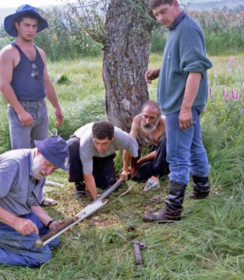

Travelling with Herb - a picture gallery
by Brigitta Ammann
Herb was a great traveller and he always had at least two things with him in his mind and his (old) backpack: one or more interesting scientific questions and one or more manuscripts to edit.
1989
Informal discussions can help a lot, be it on scientific or personal levels.

1990
We Europeans used to think that forest fire was a phenomenon occurring only in Mediterranean and boreal regions but not in central Europe. Then Jim Clark, after completing his thesis in Minnesota, showed us that we were wrong (Clark et al. 1989). At Schleinsee, Jim Clark found a remarkable fire history! Herb asked question 1: “Do you have a fire history in the Alps?” The answer was: “Sorry, we do not know”. So Herb helped to write a proposal to the Swiss NSF – which enabled Willy Tinner to work out the Holocene fire history for the southern Alps (Tinner et al. 1998, 1999) and Madlena Beckmann reconstructed the fire history of the central-Alpine dry valley of Valais (Colombaroli et al. 2013).

My first of many visits to 1426 Hythe Street, St Paul – a wonderful place for MANY reasons.
1991
Herb started to like the “International Moor Excursions” initiated in 1975 by Gerhard Lang, described by Gerhard as: ”For advanced students”. But since the sentence “bonus vir semper student” is also valid for women, we all felt happy and inspired by these excursions (http://www.botany.unibe.ch/imoorex/index.php). This XV International Moor Excursion (IME) was led by Roel Janssen, Paula Queiros, José Mateus, Jacqueline van Leeuwen, and Pim van der Knaap. Herb asked question 2: What can we learn from steep gradients such as elevational transects? For example from the coast to the Serra de Estrela?


Herb’s question 3: How similar or how different are various amphi-atlantic phenomena (Wright 1977, 1989)? And Herb discussed it with Gerhard Lang.

As a follow-up from question 2, Herb helped us to core five sites in the Central Alps in 1992 (from 600 to 2290 m a.s.l., Ammann et al. 2000).
1992
In 1992 we visited Andy Wright in Adelaide and enjoyed the beauties of the Australian south coast and canoeing on the Mighty Murray River.

1993
Herb’s first statement: “Dirk Verschuren needs a new core” – so we cored in the Crescent Island lake of Lake Naivasha (Verschuren et al. 2000). Herb’s second statement: ”Always keep the corer vertical”. We had to be back in camp by noon because the hippopotami become active and do not like shadows over their heads!

 |
 |
That same summer Herb also cored three lakes in the Slovak Tatra with Kamil Rybniček (Rybníčková & Rybníček 2006). During the excursion of the ‘History of Mountain Flora’ Conference to the Bulgarian Pirin Mountains, Herb stated: “These lakes deserve proper coring” – so he did in 1994, 2002, and 2006.
1994
This was the summer when Herb cored six lakes in five days in the Rila and Pirin Mountains of Bulgaria guided by Elisaveta Bozilova. We also travelled in Greece, e.g. to Githio in the southern Peloponnese. Herb’s fascination with the eastern Mediterranean possibly had its roots in his early work in the Levant: the coast of Lebanon (1947), Kurdistan (1961), Zagros Mountains (Wright et al. 1961, 1963, 1967, Stevens et al. 2001), Mycenaean Greece (1968), early food production in Mesopotamia (1968, 1970, 1976, 1993), the Minnesota Messenia expedition (1972) and more. Previously I had thought that “Kalamata” was just a very fine type of olive, but Herb showed me the place and the landscape with its great archaeology.1995
The Açores are in a way a stepping stone between North America and Europe and are biogeographically very special. On Flores, are two lakes – Lagoa Funda and Lagoa Rasa – which mean profound lake and shallow lake. Of course we could not core Lagoa Funda, but we did core Lagoa Rasa (second attempt in 1998; Connor et al. 2012).
Herb was always very strong in overcoming obstacles.
Since 1990 we enjoyed the serenity of the BWCA every summer.


The 1995 Moor Excursion in Denmark - classical sites and new results presented by friendly Vikings Bent Aaby (below left), Bent Odgaard (below right), and Sven Th. Andersen.
 |
1996
Jorge Rabassa in Ushuaia wanted a piston corer but did not want to pay for the air freight. Herb replied: “I no longer send corers by ship – but we will bring one!” Also in 1996: Herb receives his third Honorary Doctoral Degree – from University of Minnesota. The Moor Excursion went to Germany, led by T. Litt, S. Schloss, A. Hölzer, J. Kalis, M. Rösch et al.

1997
Madeira, a beautiful crater lake became a reservoir :(
 |
 |
Lake of the Clouds is a lot better!
1997 saw the first coring trip to Georgia

And Herb’s 80th birthday!
1998
Second coring trip to Georgia (Great Caucasus and Caucasus Minor)
|  |
First coring trip to the Russian Altai. Herb’s original question (no. 4) was based on his transatlantic interest: In the Upper Mid-West of the US there was during the Holocene an east-west swing of the prairie-forest border. Were there similar changes in continental Eurasia? Unfortunately the potential sites in the Kulundinskaya steppe were hopeless. So the question of the elevational gradients was addressed, as well as the fancy drowned pingos.
Questions 5 and 6 concern many landscapes with patterns: What processes produce such patterns? At small spatial scales (e.g. pingos or patterned peatlands (see 2004)) and at large scales (e.g. the huge river terraces of the Katun River or the giant ripples in the Kuray Basin in the Altai). Ripples remind us of the Channelled Scablands in Washington US (picture in Wright 2005). Pavel Borodavko is a great geomorphologist and can explain the various hypotheses.
The 1998 Moor Excursion went to Ontario (guided by Jock McAndrews & Jean-Nicolas Haas).
In September, a second coring trip to Lagoa Rasa on the Azores (Connor et al. 2012).
In 1998 Herb visited the famous Aletsch Glacier in Switzerland and its moraines of the Younger Dryas and 1850.
1999
This was a busy year. First, spring on La Palma together with Elisabeth Grönlund, working on texts.
Then coring in the Czech Republic
A second trip to the Russian Altai in 1999, where we cored three sites close to the timberline: Uzun Kol (1985 m), Kedegelju (2050 m), and Tash Kol (2150 m) (Blykhartchuk et al. 2004). One evening when we were all sitting around the campfire one of the students asked me: “Is it not strange for the American professor to sit by an open fire?” No, he does that on at least 300 days of the year, be it indoors or outdoors!

Near Uzun Kol we met N. Lashchinsky from Novosibirsk and three colleagues from Göttingen, B. Meyer, F. Lehmkuhl, F. Schlütz
Herb manages to communicate with his blue eyes and a smile!
In 1999Herb, Willy Tinner, and Petra Kaltenrieder core Grizzly Lake, Alaska (Tinner et al. 2006, 2008, 2015).
The 1999 Moor Excursion goes to The Netherlands. The most popular means of transport in this country is also used during the excursion. Bas van Geel was somewhat worried and asked: “Is it not too much for Herb?” Answer: “Herb is a more experienced biker than most of us – from Hythe Street to Pillsbury Hall he makes 2 x 7 km per day!
 |
2000
January saw coring of West Twin and Steel Lake, Minnesota: August saw coring of Ak-Kol and Grusha in the Tuwa Republic, Siberia, >2000 m a.s.l. - but not as cold as Minnesota! (Westover et al. 2006; Blyakhartchuk et al. 2007; Ilyashuk & Ilyashuk 2007; Stefanova & Oeggl 1993). The Moor Excursion went to the Southern Alps.
2001
More coring!
In September 2001, the Moor Excursion visitedPoland. Leaders were M. Latałowa, K. Tobolski, K. Milecka, M. Makohonienko, et al.
[Krystyna Wasylikowa comes from Kraków to see Herb]
2002
Bulgaria, coring in the Pirin mountains. Popovo 2 and 6, Kremensko-5 (2124 m), Besbog (2250 m), Praso (1900 m) (Atanassova & Stefanova 2003; Stefanova & Oeggl 1993; Stefanova et al. 2006 a,b).
The Moor Excursion 2002 brought us to western Norway under the guidance of Hilary and John Birks. Great landscapes, great science, and a relaxing boat trip on Sognefjord.

2003
Herb and Vania at Hythe Street. This is a wonderful symbiosis. Herb: “Yes, we are like a lichen, and you are the algae who capture the sunshine!”
In 2003, Herb taught Elisa Vescovi and Mike Tanner how to subsample a short core. Northern Apennines, Abetone, Lago di Greppo (Vescovi et al. 2010).
2004
What better place than the BWCA to do some editing?
in the afternoon…
When I got my manuscripts back from Herb they were often sprinkled with marks (like grated cheese over spaghetti) but more concise and much clearer!
But editing also took place at home.
Also in 2004 there was a nice visit to Barbara and Dean Hansen in Stillwater.
And on a special table the tickets are ready for the St. Paul Chamber Orchestra and the Minnesota Symphony Orchestra.
The 2004 Moor Excursion went toEstonia: leaders were Tiiu Koff, Mihkel Kangur and Jaan-Matti Punning.
Patterned peatlands (included in question 5) are extremely vast in northern Minnesota (Red Lake peatlands, edited by Wright et al. 1992), large and impressive in Hammarmosse, Sweden (Foster et al. 1983, 1988, 1990), and a lot smaller and rarer in the Alps. Herb helped with the coring and writing of Ammann et al. 2013.
2005
Hospitality at Hythe Street is always great!
Though potentially dangerous!
But everyone survived!
2006
The 2006Moor Excursion brought us to northern Italy – to Accesa or the museum in Bergamo (leaders E. Vescovi, D. Colombaroli, W. Tinner, P. Kaltenrieder).
Herb and Vania core Sucho Breznisko in the Pirin Mountains in 2006. BA remains in Bern for sweet family reasons.

Herb teaches the next two generations how to core sediments.
2007
In 2007 we celebrate Herb’s 90th birthday on both sides of the ocean.
The first day was filled with symposium lectures, the second day with an excursion to the Morteratsch Glacier, and somewhere in between there was cake!
And more celebrations at Hythe Street.

2008
Birthday at Hythe Street!
2008 also saw a visit to Bogota for the wedding of Christopher and Ingrid.
2011
Yay! More cake! Another birthday at Hythe Street.
2012
March, visit to Jim Smith, the machinist who made Herb’s corers for many years (and still does).
Visitto the Science Museum and its great omnitheatre show in 2012.
We enjoyed the hospitality of Barbara Coffin and Dan Engstrom.
2013
Many came to Minnesota for the ESA Conference.
September 13th 2013 – a nice birthday at home.
and at the Bell Museum.
 |
2014
Birthday with Carrie Jennings and Vania
and at Barbara’s and Dan’s place with Eric Grimm, Jim Almendinger and Paul Glaser.
2015
September 13th, Herb’s 98th birthday.
Herb on his 98th birthday. Question: “Herb, what composer would you like to listen to?” Herb’s answer: “Today, well, Schubert!”
References
Ammann, B., Birks, H.J.B., Brooks, S.J., Eicher, U., von Grafenstein, U., Hofmann, W., Lemdahl, G., Schwander, J., Tobolski, K., Wick, L. 2000. Quantification of biotic responses to rapid climatic changes around the Younger Dryas - a synthesis. Palaeogeography, Palaeoclimatology, Palaeoecology 159, 313-347.
Ammann, B., Wright, H.E., Stefanova, V., van Leeuwen, J.F.N., van der Knaap, W.O., Colombaroli, D., Tinner, W. 2013. The role of peat decomposition in patterned mires: a case study from the central Swiss Alps. Preslia 85, 317-332.
Atanassova, J., Stefanova, I. 2003. Late-glacial vegetational history of Lake Kremensko-5 in the northern Pirin Mountains, southwestern Bulgaria. Vegetation History and Archaeobotany 12, 1-6.
Blyakharchuk, T.A., Wright, H.E., Borodavko, P.S., van der Knaap, W.O., Ammann, B. 2004. Late Glacial and Holocene vegetational changes on the Ulagan high-mountain plateau, Altai Mountains, southern Siberia. Palaeogeography, Palaeoclimatology, Palaeoecology 209, 259-279.
Blyakharchuk, T.A., Wright, H.E., Borodavko, P., van der Knaap, W.O., Ammann, B. 2007. Late Glacial and Holocene vegetational history of the Altai Mountains (southwestern Tuva Republic, Siberia). Palaeogeography, Palaeoclimatology, Palaeoecology 245, 518-534.
Blyakharchuk, TA.., Wright, H.E., Borodavko, P., van der Knaap, W.O., Ammann, B., 2008. The role of pingos in the development of the Dzhangyskol lake-pingo complex, central Altai Mountains, southern Siberia. Palaeogeography, Palaeoclimatology, Palaeoecology 257, 404-420.
Clark, J., Merkt, J., Müller, H. 1989. Post-glacial fire, vegetation, and human history on the northern alpine forelands, south-western Germany. Journal of Ecology 77, 897-925.
Colombaroli, D., Beckmann, M., van der Knaap, W.O., Curdy, P., Tinner, W., 2013. Changes in biodiversity and vegetation composition in the central Swiss Alps during the transition from pristine forest to first farming. Diversity and Distributions 19, 157-170.
Connor, S., van Leeuwen, J.F.N., Rittenour, T., van der Knaap, W.O., Ammann, B., Björck, S. 2012. The ecological impact of oceanic island colonization - a palaeoecological perspective from the Azores. Journal of Biogeography 39, 1007-1023.
Foster, D.R., Wright, H.E. 1990. Role of ecosystem development and climate change in bog formation in central Sweden. Ecology 71, 450-463.
Foster, D.R., King, G.A., Glaser, P.H., Wright, H.E. 1983. Origin of string patterns in boreal peatlands. Nature 306, 256-258.
Foster, D.R., Wright, H.E., Thelaus, M., King, G.A. 1988. Bog development and landform dynamics in central Sweden and south-eastern Labrador, Canada. Journal of Ecology 76, 1164-1185.
Hošek, J., Pokorný, P., Kubovčík , V., Horáček, I., Žáčková, P., Kadlec, J., Rojik, F., Lisá, L., Bučkuliaková, S. 2014. Late glacial climatic and environmental changes in eastern-central Europe: Correlation of multiple biotic and abiotic proxies from the Lake Švarcenberk, Czech Republic. Palaeogeography, Palaeoclimatology, Palaeoecology 396, 155-172.
Ilyashuk, B., Ilyashuk, E. 2007. Chironomid record of Late Quaternary climatic and environmental changes from two sites in Central Asia (Tuva Republic, Russia)—local, regional or global causes? Quaternary Science Reviews 26, 705-731.
Pokorný, P. 2002. A high-resolution record of Late-Glacial and Early-Holocene climatic and environmental change in the Czech Republic. Quaternary International 91, 101-122.
Pokorný, P., Šída, P., Chvojka, O., Žáčková, P., Kuneš, P., Svĕtlik, I., Veselý, J, 2010. Palaeoenvironmental research of the Schwarzenberg Lake, southern Bohemia, and exploratory excavations of this key Mesolithic archaeological area. Památky Archeologické 101, 5-38.
Rybníčková, E., Rybníček, K. 2006. Pollen and macroscopic analyses of sediments from two lakes in the High Tatra mountains, Slovakia. Vegetation History and Archaeobotany 15, 345-356.
Stefanova, I., Oeggl, K. 1993. Zur holozanen Vegetationsgeschichte SWBulgariens: Das Moor Praso (1900 m) im Pirin Gebirge. Berichte des naturwissenschaftlich-medizinischen Vereins in Innsbruck 80, 69–80.
Stefanova, I., Atanassova, J., Delcheva, M., Wright, H.E. 2006a. Chronological framework for the Late Glacial pollen and macrofossil sequence in the Pirin Mountains, Bulgaria: Lake Besbog and Lake Kremensko-5. The Holocene 16, 877-892.
Stefanova, V., Lazarova, M., Wright, H.E. 2006b. Elevational gradients during the Late-Glacial/Holocene vegetational transition in southern Bulgaria. Vegetation History and Archaeobotany 15, 333-343.
Stevens, L., Wright, H.E., Ito, E. 2001. Proposed changes in seasonality of climate during the Lateglacial and Holocene at Lake Zeribar, Iran. The Holocene 11, 747-755.
Tinner, W., Conedera, M., Ammann, B., Gäggeler, H., Gedye, S., Jones, R., Sägesser, B. 1998. Pollen and charcoal in lake sediments compared with historically documented forest fires in southern Switzerland since AD 1920. The Holocene 8, 31-42.
Tinner, W., Hubschmid, P., Wehrli, M., Ammann, B., Conedera, M. 1999. Long-term forest fire ecology and dynamics in southern Switzerland. Journal of Ecology 87, 273-289.
Tinner, W., Hu, F., Beer, R., Kaltenrieder, P., Scheurer, B., Krähenbühl, U. 2006. Postglacial vegetational and fire history: pollen, plant macrofossil and charcoal records from two Alaskan lakes. Vegetation History and Archaeobotany 15, 279-293.
Tinner, W., Bigler, C., Gedye, S., Gregory-Eaves, I., Jones, R., Kaltenrieder, P., Krähenbühl, U., Hu, F. 2008. A 700-year paleoecological record of boreal ecosystem responses to climatic variation from Alaska. Ecology 89, 729-743.
Tinner, W., Beer, R., Bigler, C., Clegg, B., Jones, R., Kaltenrieder, P., van Raden, U., Gilli, A., Hu, F. 2015. Late-Holocene climate variability and ecosystem responses in Alaska inferred from high-resolution multiproxy sediment analyses at Grizzly Lake. Quaternary Science Reviews 126, 41-56.
Velichko, A., Nechaev, V., Wright, H.E., Blyakharchuk, T., Borisova, O. 2005. Cenozoic Climatic and Environmental Changes in Russia, The Geological Society of America Special Paper, Boulder, Colorado, p. 226.
Verschuren, D., Laird, K., Cumming, B. 2000. Rainfall and drought in equatorial east Africa during the past 1,100 years. Nature 403, 410-414.
Vescovi, E., Ammann, B., Ravazzi, C., Tinner, W. 2010. A new Late-glacial and Holocene record of vegetation and fire history from Lago del Greppo, northern Apennines, Italy. Vegetation History and Archaeobotany 19, 219-233.
Westover, K., Fritz, S., Blyakharchuk, T.A., Wright, H.E. 2006. Diatom paleolimnological record of Holocene climatic and environmental change in the Altai Mountains, Siberia. Journal of Paleolimnology 35, 519-541.
Wright, H.E. 1961. Pleistocene glaciation in Kurdistan. Eiszeitalter und Gegenwart 12, 134-164.
Wright, H.E. 1963. Climatic change in the Zagros Mountains – revisited. In: Braidwood, L., Braidwood, R.J., Howe, B., et al. (Eds.) Prehistoric Archaeology Along the Zagros Flanks. Oriental Institute, Chicago, pp. 505-506.
Wright, H.E. 1968a. Climatic change in Mycenean Greece. Antiquity 42, 123-127.
Wright, H.E. 1968b. The natural environment of early food production north of Mesopotamia. Science 161, 334-339.
Wright, H.E. 1970. Environmental changes and the origin of agriculture in the Near East. BioScience 20, 210-217.
Wright, H.E. 1972. Vegetation history. In: McDonald, W.A., Rapp, G. (Eds.) The Minnesotan Messinia Expedition: Reconstructing a Bronze Age Environment. University of Minnesota Press, Minneapolis, pp. 188-199.
Wright, HE., 1976. The environmental setting for plant domestication in the Near East. Science 194, 385-389.
Wright, H.E. 1977. Quaternary vegetation history - some comparisons between Europe and America. Annual Review of Earth and Planetary Science 5, 123-158.
Wright, H.E. 1989. The amphi-Atlantic distribution of the Younger Dryas paleoclimatic oscillation. Quaternary Science Reviews 8, 295-306.
Wright, H.E. 1993. Environmental determinism in Near Eastern prehistory. Current Anthropology 34, 458-469.
Wright, H.E. 2005. Contrasts in the Quaternary of mid-North America and mid-Eurasia: notes on Quaternary landscapes of western Siberia. Journal of Quaternary Science 20, 813-819.
Wright, H.E., McAndrews, J., Zeist, W.V. 1967. Modern pollen rain in western Iran, and its relation to plant geography and Quaternary vegetational history. Journal of Ecology 55, 415-443.
Wright, H.E., Coffin, B.A., Aaseng, N.E. (Eds.) 1992. Patterned Peatlands of Minnesota. University of Minnesota Press, Minneapolis, p. 327.